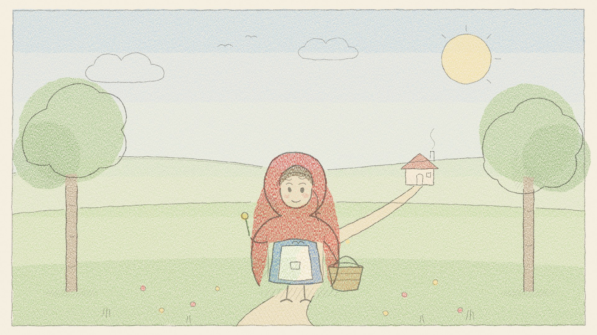

Little Red Riding Hood: Bedtime Story for Kids, Our Retelling (after the Brothers Grimm)
Little Red Riding Hood from the Brothers Grimm, told in our own words as a gentle bedtime story. A sly wolf, a clever grandmother and a girl who learns to stay on the path. Nobody gets hurt. In this episode: - A red velvet cap and a walk through the woods - What big ears you have: the bedside talk - A wolf on the roof and a sausage-water splash Sources: Little Red-Cap, Brothers Grimm, translated by Margaret Hunt (Wikisource) Music: Kevin MacLeod (incompetech.com), CC BY 4.0 Gentle stories for bedtime and story time, told slowly by a warm narrator. luongnv.com/podcast/stories
Listen on Once Upon a Time Show Download MP3 Transcript
Also in: Français, Tiếng Việt
Based on Little Red-Cap by Jacob and Wilhelm Grimm, translated by Margaret Raine Hunt
Transcript
Narrator: Welcome to Once Upon a Time Show. It's time for a bedtime story. Hello, little one. Pull your blanket up close and get cosy. Tonight's tale is a very old one from the Brothers Grimm. You might know her as Little Red Riding Hood. Here she's called Little Red Cap. Ready? Off we go. Long ago, there lived a little girl whom everyone loved. Her grandmother loved her the very most. One day she gave her a cap of red velvet. The girl loved it so much that she wore nothing else. So everyone called her Little Red Cap. One morning her mother gave her some cake and a little bottle of grape juice. Take these to Grandmother, she said. She's poorly, and they'll help her feel better.
Go before the day gets hot. Stay on the path, so you don't trip and break the bottle. And say good morning when you go in. I'll be careful, said Little Red Cap, and she promised. Grandmother's cottage stood out in the woods, under three tall oak trees. As soon as Little Red Cap stepped in among the trees, a wolf came padding up. She didn't know he was sly, so she wasn't scared. Good day, said the wolf. Where are you off to so early? To Grandmother's, she said. I've got cake in my apron. She lives under the three big oaks. The wolf grinned. He had a sly plan. He strolled beside her for a while. Look at these pretty flowers, he said. Hear the birds sing? You walk so seriously, as if you're off to school.
Little Red Cap looked up. Sunbeams danced between the trees, and flowers nodded everywhere. Grandmother would love some flowers, she thought. It's still early. So she stepped off the path. Whenever she picked a bloom, a lovelier one seemed to wait just ahead. And she wandered deeper, and deeper, into the woods. But the wolf trotted straight to Grandmother's cottage and knocked. Who's there? Little Red Cap, the wolf answered, as softly as he could. Lift the latch, called Grandmother. I'm too tired to get up. The door swung wide. Grandmother was poorly, but she wasn't silly. When she saw a grey furry nose, she slipped into her big cupboard, quiet as a mouse.
The wolf found the bed empty. So he put on Grandmother's nightgown and her frilly cap, climbed into bed and pulled the curtains closed. Soon he was snoring loudly. At last Little Red Cap had more flowers than she could carry, and she hurried to the cottage. She found the door standing open. Good morning, she called out. Nobody answered. She drew back the bed curtains. There lay Grandmother, with her cap pulled low. She looked very odd. Oh, Grandmother, what big ears you have. The better to hear you with, dear one. Grandmother, what big eyes you have. The better to see you with. And what big hands you have. The better to hug you with.
Oh, Grandmother, what a great big mouth you have. The wolf leapt out of bed with a growl. But Little Red Cap hopped back, light as a sparrow, and called for help. Now, a huntsman was passing by. He'd heard the loud snoring and thought, My, how the old lady snores. I'd better see if she needs anything. So in he came, just in time. So there you are, you old rascal, he said to the wolf. And out of the cupboard popped Grandmother. Three against one. The wolf dashed out of the door and back into the deep woods. Nobody was hurt at all. Then all three were full of joy. Grandmother ate the cake, sipped her juice, and soon felt strong again. And Little Red Cap promised herself she would never run off the path again.
Another day, Little Red Cap took cakes to Grandmother once more. A different wolf tried to tempt her off the path. But this time she walked straight on, and told Grandmother all about his sly eyes. We'll shut the door tight, said Grandmother. Before long there came a knock. Open up, it's Little Red Cap. But they kept quiet. So the wolf hopped onto the roof to wait for evening. But Grandmother guessed his plan. I cooked sausages yesterday, she said. Carry the cooking water to the stone trough outside. Little Red Cap carried and carried, until the trough was full. Soon the smell of sausages floated up to the roof. The wolf sniffed. He peeped over the edge. He stretched his neck further, and further, until, whoops, down he slid, and splash, into the trough.
Out he scrambled, soaking wet, and he scampered away between the trees. And Little Red Cap skipped home happily. Now the cottage under the three oak trees is still. Grandmother is tucked in, and the flowers rest in a cup by her bed. Back at home, Little Red Cap lies in her own little bed. Her red cap hangs on its hook. Her eyes are growing heavy. Stay close to the path, and close to the ones who love you. Close your eyes now, little one. Goodnight from Once Upon a Time Show. Sweet dreams.